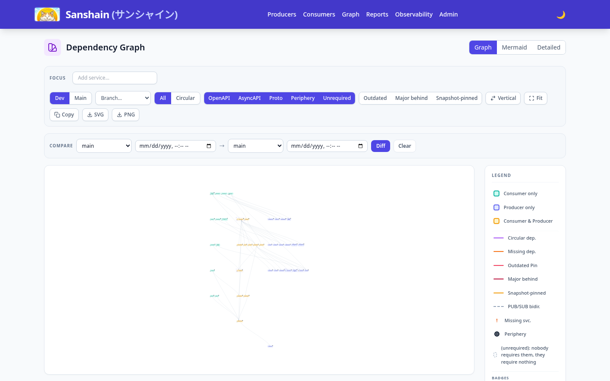

Sanshain is small enough to hold in one head. This page is the whole model; the glossary has every term in one or two sentences, and the Developer track has the details.
A Producer publishes its complete API specification: OpenAPI, AsyncAPI or gRPC/Proto. A Consumer does not take that document. It asks for the endpoints, channels or methods it actually calls and receives a document that contains nothing else: a snippet, cut from the Producer's spec with the schemas it references. Producer and Consumer are roles, not kinds of system: a system is usually both, and Sanshain lists it once in each role.
Whoever calls Sanshain on a system's behalf is tooling: the
Maven plugin, a CLI, a curl line in a pipeline. Tooling reads one file,
sanshain.yaml, and turns it into the calls below.
A version is MAJOR.MINOR.PATCH and lives in the
spec file: info.version, or for proto a mandatory
// sanshain-version: comment. Sanshain never assigns one. The versions one Producer
has published for one API type form its version line; a
Producer's OpenAPI line and its proto line evolve independently.
Every provide declares a stability, and there are exactly two:
How a build decides is the tooling's business: every client provides a snapshot unless its
ga switch (SANSHAIN_GA=true, --ga,
-Dsanshain.ga=true) is set, which CI does on its release pipelines. Sanshain never
looks at a git branch. Publishing GA needs the releaser
role.
Two rules keep the numbers honest, and both are self-service: a GA provide under an existing GA
number with different content, and a GA provide whose changes against the previous GA are
breaking without a major bump, are refused with
409 and a proposed version. Set it in
the spec and republish. The API lifecycle chapter
draws the rules and quotes the messages.
A Consumer's dependency is a pin: the exact version it builds
against, written in its own sanshain.yaml. No ranges, no latest, no
default. A require names the Producer, the pin and one
endpoint; a bundle names several endpoints of one Producer at
one pin and gets one merged document with each shared schema once.
Resolution looks at the one entry the line holds for the
pinned version, snapshot or GA; nothing else is consulted and nothing waits. A successful require
is served and records the dependency. A version that exists
without the endpoint is absent (410): the spec was
complete, so the omission is deliberate. A version that does not exist is
unknown (404): fix the pin. A failed require
records nothing, so the graph never shows a dependency that could not have compiled.
Because pins are exact, a new version can never break a Consumer. The version rules above exist so
that a Consumer reading 2.4.0 → 2.5.0 can trust the upgrade is compatible.
Every recorded require is an edge, so Sanshain knows which Consumer pins which version of which endpoint, and draws it as the dependency graph. The graph highlights two things a pin set can hide: an outdated pin, below the latest GA of its line, and a snapshot-pinned one, built against overwritable content. Both are display states; neither changes what is served.

/graph.html.
A plain provide or require records dev activity: the
dev graph is everything ever recorded, snapshots and feature
builds included, thinned by a 30-day window. That is noise when the question is "what is
production?". So a build may declare its stream:
trunk: true on the calls of your default-branch CI stamps the version as
trunk's and maintains the
main graph, the set of trunk pins, deterministic after
every trunk build. A trunk entry not refreshed for half the
trunk TTL (45 days by default) is highlighted as stale; one
not refreshed for the whole TTL (90 days) leaves the main graph. Nightly re-runs of an unchanged
trunk build are what keeps them fresh. Streams never change version rules or what a require is
answered; they only decide which graph records the call.
A sanshain-branch is a named copy of the main graph
(or of another branch) at a chosen instant: the
release cut. A releaser creates it, with a past instant if
the cut was forgotten. Hotfix builds send tag: "<branch>" and update that
branch instead of trunk. Branches are never auto-created: an unknown tag still succeeds, is
recorded in the dev graph only, and answers a
Sanshain-Warning header. Graph writes
are append-only, so the main graph and every branch have a
timeline: any of them can be rendered as it was on any date,
and any two can be diffed. The Release graphs
chapter draws it.
The graph knows only Producers and Consumers until a build pushes the system's Backstage
catalog-info.yaml (the catalog push). Of it
Sanshain reads the resource: refs in spec.dependsOn, which become
peripheral resources: a database, bucket or queue
as its own node, shared by every system that names it. Since 2.6.0 it also reads the system's
owner, description, source location and links, the
catalog context shown on the node panel and on the
system's page. Edges between systems are never read from Backstage; those are what requires
record.
People log in and get a session; builds and assistants send an
API token. A token belongs to one user, is shown once,
expires, and has a scope fixed at creation:
full may do everything its owner may, read_only may read reports,
versions, the update streams and the MCP endpoint, and is refused with 403 on every
call that changes the catalog. Mint a read-only token for an AI assistant and a full one for CI.
What a token may do beyond its scope is its owner's permissions: a GA provide needs the releaser
role, deleting a version needs admin or maintainer
rights on that Producer.
Everything Sanshain records can also be pushed out: a
webhook is a signed POST for a version published,
a provide rejected, a deprecation, a new dependency, a branch cut or a catalog push. A Producer's
hooks live on its page; a Consumer's hooks receive the events of every Producer it currently
requires. Receivers must be on an administrator's allow-list. And an AI assistant can ask the
catalog directly over MCP, read-only: who provides what, where an
endpoint is, what changed between two versions.
sanshain.yaml, the
clients, CI, the lifecycle rules, release graphs, MCP.
Checked against v2.6.0.